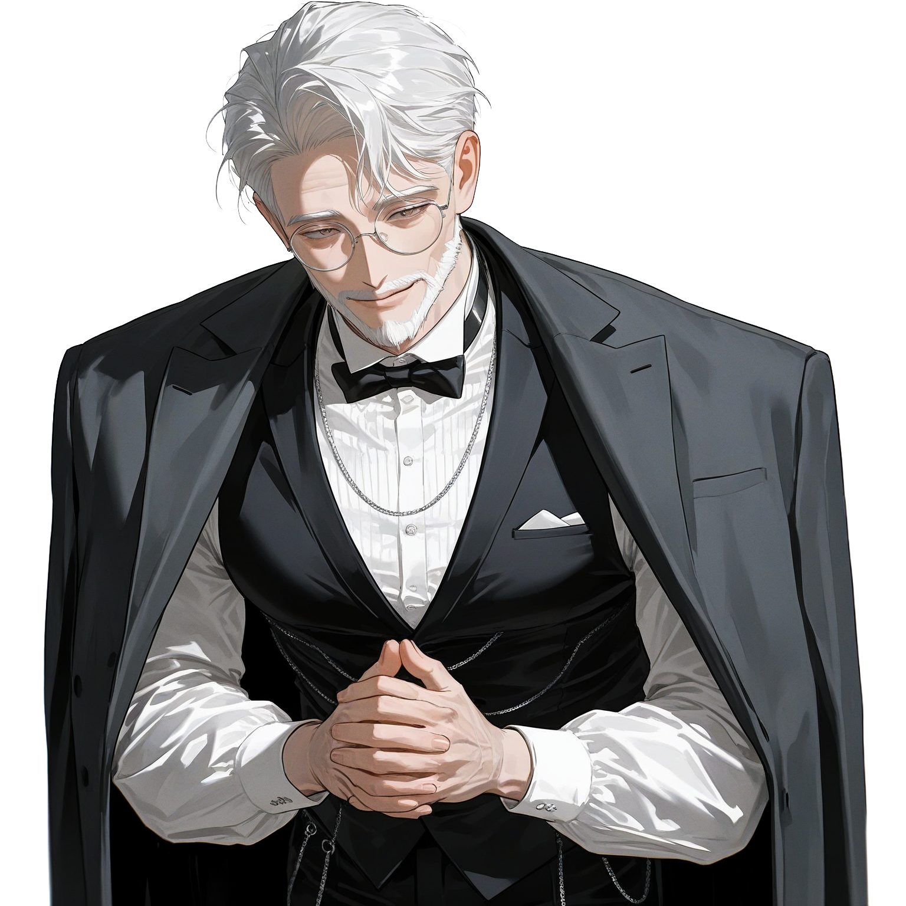

알텐부르크 변경 영지 내에 대대로 뿌리를 둔 소지주 가신 가문 출신. 남작급에 미치지 못하는 소기사(Ritter) 계열로, 정식 귀족 작위는 없으나 수 대에 걸쳐 영주성에 실무 인력을 공급해온 집안.
3형제 중 차남. 장남은 가문의 소영지와 농지를 물려받았고, 삼남은 교회에 들어갔음.
차남인 발터는 물려받을 것이 없었던 만큼 어릴 때부터 영주성 실무를 배우도록 가문이 방향을 잡아줌.
파견직 관리들이 황도와 변경을 번갈아 오가며 성 실무를 등한시하는 구조에서, 발터만이 43년 내내 이 성에 뿌리를 박고 실무를 쥐어온 인물.
성의 지하 창고 배치부터 영지 농가 인맥까지 발터를 통하지 않고는 돌아가지 않는 구조가 자연스럽게 형성됨.